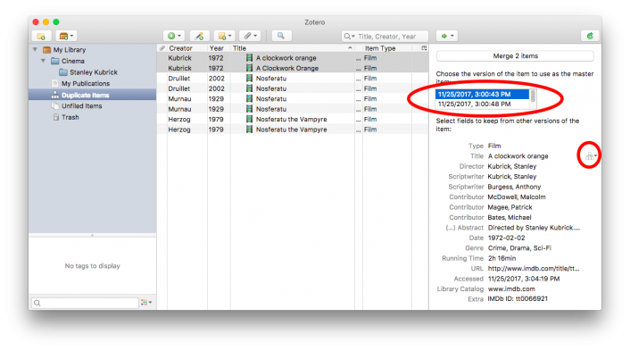

Merging Duplicates
Zotero has built-in duplicate detection software to help you save space and stay organized.
You should always resolve duplicate items by merging them, rather than deleting one of the duplicates. Merges will retain all of the collections and tags of the merged items; deleting one item will lose these data. Merges are also automatically recognized by the word processor plugins and don't affect your automatically generated citations and bibliographie
- Navigate to the Duplicate Itemscollection.
- Select item from center pane.
- Zotero will automatically co-select the other items that it thinks are duplicates.
- Click the “Merge Items” button in the right pane to merge the items
- If the item fields don't match completely, you can select one item to be the “master” from the list at the top of the right pane, then select alternative versions of mismatched fields using the icons to the right of each field.